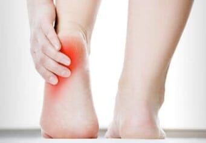

Foot Pain
Our feet are amazing, they work so hard for us without any trouble most of the time but following an injury, damage or maybe just some rubbing from our shoe and we can be in a lot of pain.

The Causes of Foot PainFeet are complex structures, each one has 26 bones, a quarter of the bones in the whole body are in our feet. All those bones are held neatly together by tendons, muscles and ligaments. Blood vessels, nerves and skin complete the picture and help keep our feet functioning well.
Foot pain is a really common problem. Many people suffer pain in their feet to such an extent that it limits their mobility and activity, in some cases really affecting people's quality of life. At kingstonfeet we see people who have foot pain caused by:
- Corns, Verrucae, Ingrowing Toenails (see Toenail Trouble)
- Heel Pain and Plantar Fasciitis
- Foot Deformities such as Bunions and Arthritis (see Bunions & Joint Problems)
- Fractures caused by stress or injury
- Muscle, Ligament and Tendon injuries
With so many different causes it is not surprising that foot pain is so common. Heel pain alone has 40 different potential causes so we need a really good knowledge of the anatomy & functioning of the feet in order to get the correct diagnosis.
Foot Pain Treatment – Who should you see?
We see a lot of patients in our practice suffering with a wide variety of foot pain. From plantar fasciitis, sprains, stress fractures through to ingrowing toenails, cracked heels, broken glass, splinters and arthritis, we have seen it all.
Podiatrists are the foot specialists who can help with foot pain, we train to degree level specifically to help people with all types of foot pain. We are the best people to help patients with their initial assessment and get a foot pain diagnosis. We can then help get you on the road to recovery. You don’t need to see your GP first, you can come straight to us.
Is There Always a Solution for Foot Pain?
For most conditions there is a clear treatment path and often a great outcome where you can gain pain relief immediately or fairly quickly. For other conditions the diagnosis and treatment plan is not so clear cut and so we are always cautious to manage the expectations. Sometimes there is nothing that we can do to help, but we have a range of other specialists in the local area that we can refer to so we hopefully get a solution for our patients suffering with foot pain, even if we don’t have the answers here at kingstonfeet.
If you have any questions about foot pain and how we could help you, please get in touch today and we can talk about your specific foot pain problem.
[scriptless]